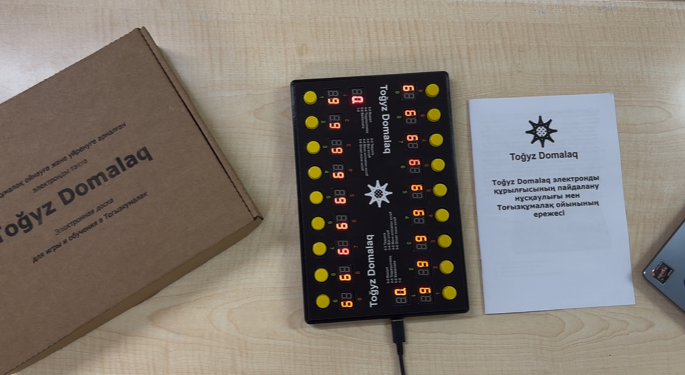
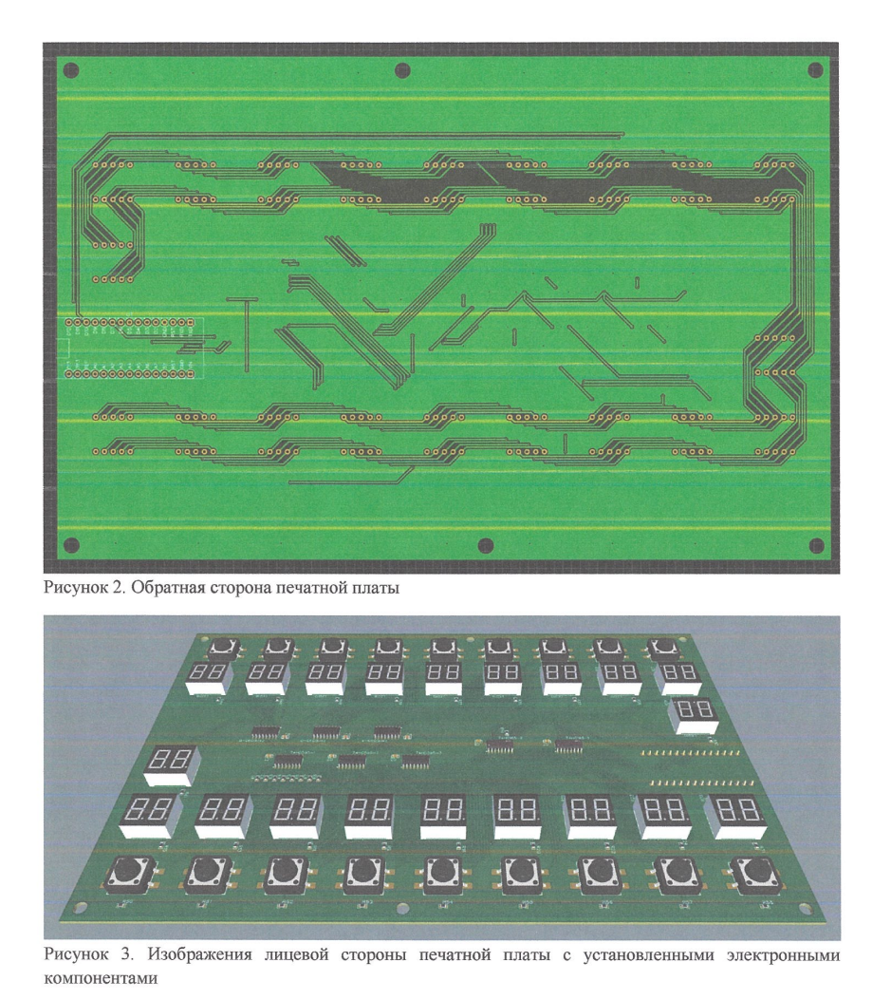
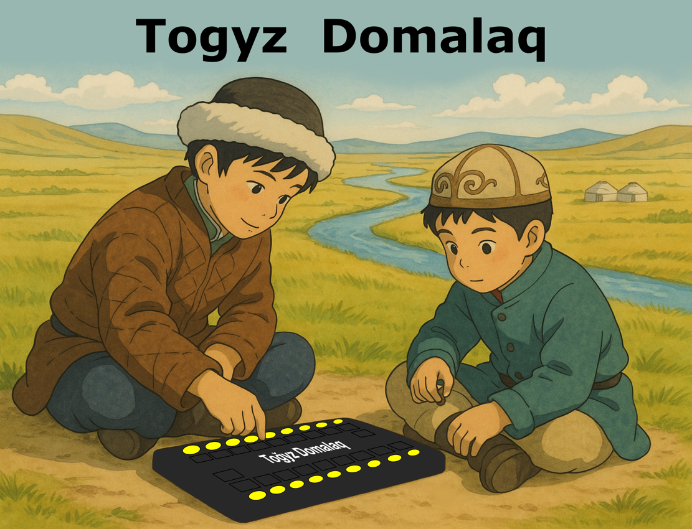
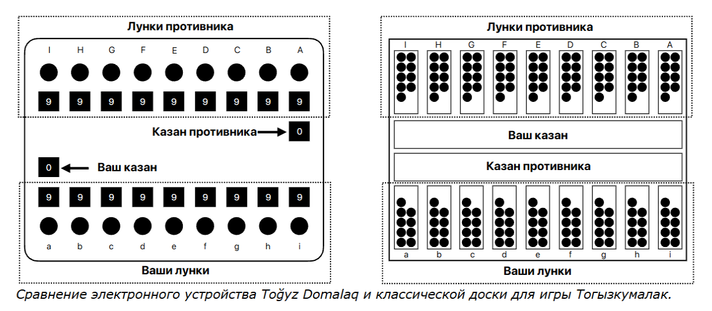
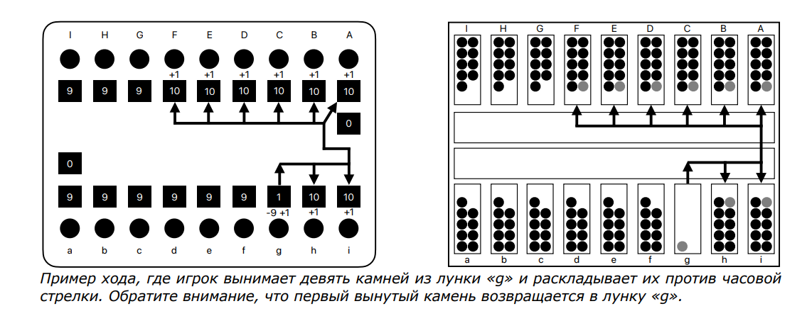
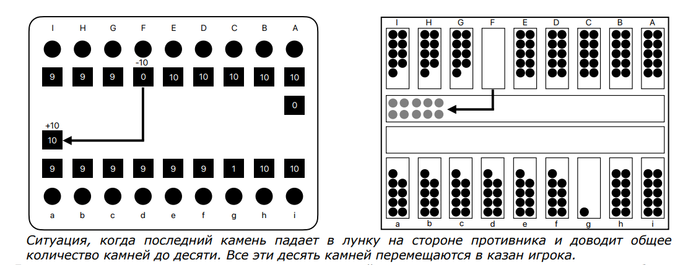
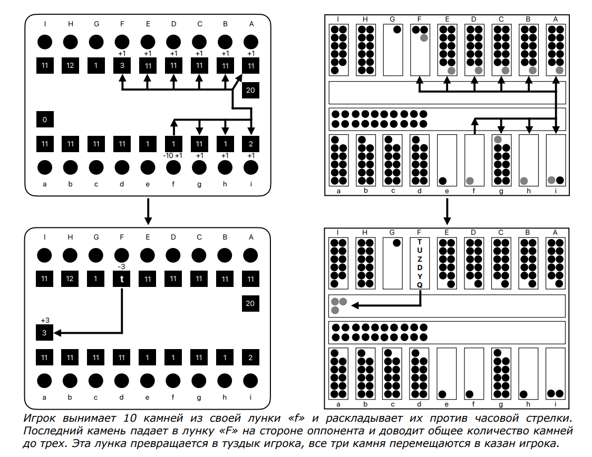
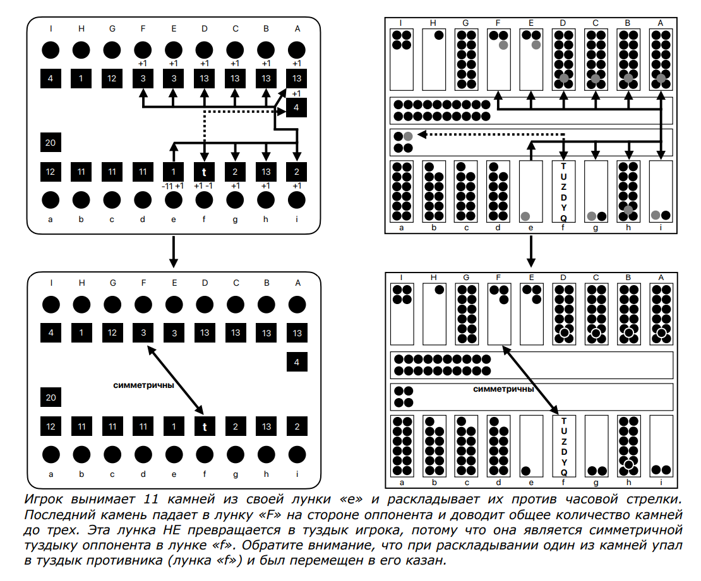
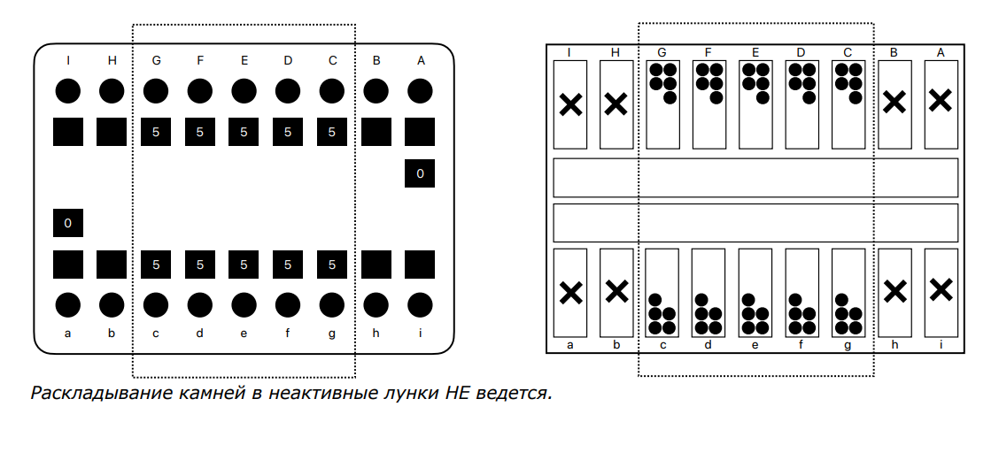
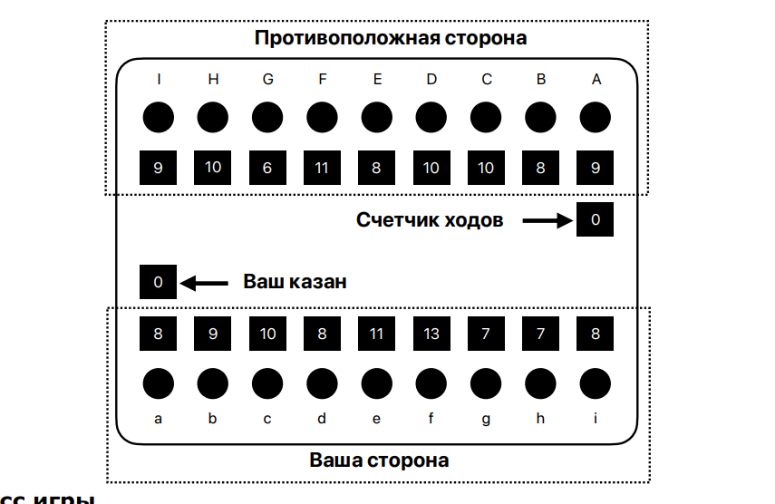

ҰЛТТЫҚ ОЙЫН · ЭЛЕКТРОННАЯ ВЕРСИЯ
Традиция.
В новом измерении.
Toqyz Domalaq — электронный джойстик для Тогызкумалак, Бештемше и Тасьянс. Три игры. Одно устройство.
Полное игровое поле
TOQYZ DOMALAQ / ГАЛЕРЕЯ
Общий набор Toqyz Domalaq
Распечатанный инструктаж, коробка набора и само устройство.
Игроки нашего устройства)

Взгляд на схему устройства
Изображения лицевой стороны печатной платы с компонентами

Национальное наследие
Какого это представлять наших предков играющих на полностью эклектронной доске?
01 / ПРАВИЛА ИГРЫ
Тогызкумалак
Ниже описаны правила игры на примере классического Тогызкумалака с 9 лунками, в каждой из которых по 9 камней. Для удобства понимания добавлены пояснения и наглядные иллюстрации со сравнением электронного устройства Toğyz Domalaq и классической доски Тогызкумалак.
Перед игрой рекомендуется ознакомиться с инструкцией к устройству Toğyz Domalaq.
01 Доска
В игре Тогызкумалак используется специальная доска с двумя рядами маленьких лунок (по девять в каждом ряду) и двумя большими лунками, которые называются «казанами». Нижний (ближний) ряд лунок считается стороной игрока, противоположный ряд — стороной противника.
В классической доске Тогызкумалак казан игрока находится ближе к стороне противника, а казан противника — ближе к стороне игрока. В электронном устройстве Toğyz Domalaq наоборот — казаны игроков расположены ближе к самим игрокам. В начале игры в каждой маленькой лунке находится по девять камней.

02 Цель игры
Игрок побеждает в игре, если он собирает в своем казане больше 81 камня. Если в конце игры в казанах каждого из игроков находится по 81 камню, то игра завершается вничью.
03 Процесс игры
Игроки ходят по очереди, вынимая камни из одной из лунок и раскладывая их в другие лунки следующим образом:
- Игрок вынимает все камни из одной из лунок на своей стороне.
- Если выбранная лунка содержала больше одного камня, то первый вынутый камень кладется обратно в ту же лунку, из которой он был взят. Все последующие вынутые камни игрок раскладывает в лунки против часовой стрелки (слева направо в своих лунках и справа налево в лунках противника). В каждую лунку он кладет по одному камню.
- Если выбранная лунка содержала всего один камень, то он кладется в следующую лунку против часовой стрелки.

4. Захват камней
Если при раскладывании игрок кладет последний камень в лунку противника, доводя общее количество камней до четного числа, то он забирает все камни из этой лунки (вместе со своим камнем) и кладет их в свой казан.

5. Туздык
Если при раскладывании игрок кладет последний камень в лунку противника, доводя общее количество камней до трех, и выполняются следующие три условия, то все эти три камня перемещаются в казан игрока, а лунка превращается в «туздык» («святое место» по-казахски):
- У игрока нет туздыка.
- Последняя лунка на стороне противника (самая правая относительно противника) не может быть превращена в туздык.
- Туздык не может быть создан симметрично уже созданному туздыку оппонента (например, если третья лунка на стороне игрока является туздыком противника, то игрок не может превратить третью лунку на стороне противника в свой собственный туздык).
Ход, нарушающий любое из этих трех условий, может быть произведен, однако в результате не создается туздык, и три камня остаются лежать в лунке. Любой камень, падающий при раскладывании в туздык, забирается владельцем туздыка в свой казан.


6. Атсырау — завершение игры
Если игрок при его очереди хода не может сделать ход, так как все его лунки пусты, то второй игрок переносит все оставшиеся в его лунках камни в свой казан, и игра завершается. Этот игровой случай называется «Атсырау» («остаться без коня» по-казахски). Выигрывает игрок, набравший большее количество камней в своем казане.
02 / ПРАВИЛА ИГРЫ
Бештемше
Игра Бестемше — упрощенная версия Тогызкумалака. Отличия от классического варианта:
- Используется 5 лунок с 5 камнями в каждой.
- Для победы игрок должен собрать больше 25 камней в своем казане.
- Две боковые лунки справа и слева с каждой стороны не активны и не участвуют в игре.
Остальные правила идентичны классическому Тогызкумалаку.

03 / ПРАВИЛА ИГРЫ
Тасьянс
Тасьянс — одиночная игра, основанная на логике Тогызкумалак. Цель игры — собрать максимальное количество камней в своем казане за минимальное количество ходов.
01 Начало игры
В начале игры в каждой из 18 лунок случайным образом распределяется количество камней, при этом сумма камней в лунках на каждой стороне всегда равна 81. Чтобы исключить выбор наиболее выгодной стороны, все лунки изначально скрыты тремя горизонтальными линиями на индикаторах.
Для начала игры игрок должен нажать любую кнопку на своей стороне — это определит, с какой стороны он будет делать ходы. После выбора стороны:
- На индикаторах лунок отображается случайное количество камней.
- Числа на индикаторах разворачиваются к игроку.
- На индикаторе казана игрока отображается количество собранных камней.
- На противоположном индикаторе казана отображается количество совершённых ходов.

02 Процесс игры
Игровой процесс полностью соответствует классическим правилам Тогызкумалак:
- Распределение камней по лункам.
- Объявление лунки туздыком.
- Захват камней в лунках и их перемещение в казан.
Игрок делает ходы только на выбранной стороне, смена стороны хода не происходит. После каждого хода на противоположном индикаторе казана увеличивается счётчик ходов.
03 Конец игры
Игра завершается автоматически, когда во всех лунках игрока заканчиваются камни. После этого десятичные точки на всех индикаторах лунок мигают.